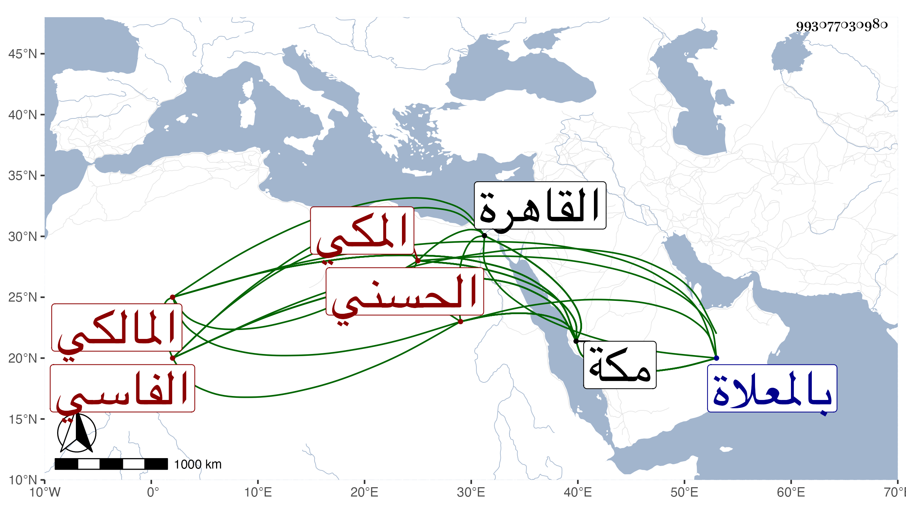

0902Sakhawi.DawLamic.ITO20230111-ara1.EIS1600.993077030980
Biography ID: 993077030980
28
محمد الرضي أبو حامد الحسني الفاسي المكي المالكي شقيق اللذين قبله . ولد في رجب سنة خمس وثمانين وسبعمائة وقيل في سادس رجب من التي قبلها بمكة وسمع بها ظنا على العفيف النشاوري والجمال الأميوطي ويقينا على ابن صديق والزين المراغي ، وأجاز له جماعة وحفظ عدة من مختصرات الفنون وتفقه بأبيه وبالزين خلف النحريري وأبي عبد الله الوانوغي وقرأ عليه مختصر ابن الحاجب الأصلي بل وحضر دروسه في فنون من العلم بمكة وغيرها ، وأخذ العربية عن الشمس الخوارزمي المعيد والشمس البوصيري حين جاور بمكة وكثرت عنايته بالفقه فتميز فيه وفي غيره ، وكتب بخطه الذي لا بأس به عدة كتب ، وأذن له في التدريس والإفتاء وتصدر للتدرس والإفتاء وولي القضاء في رابع عشري شوال سنة سبع عشرة وثمانمائة عوضا عن مستنيبه وابن عمه التقي الفاسي ووصل التوقيع لمكة في أوائل ذي الحجة منها فلبس خلعة الولاية وباشر فلما رحل المصريون جيء بتوقيع التقي الفاسي مؤرخ بسابع ذي القعدة منها فترك المباشرة واستمر حريصا على العود فما تيسر له ، وقد ناب عن الجمال بن ظهيرة وحكم في قضايا لا تخلو من انتقاد وكتب على مختصر الشيخ خليل وشارحيه الصدر عبد الخالق بن الفرات وبهرام شيئا في قدر ثلاث كراريس فلم يقرض عليه علماء القاهرة شيئا ، بل قيل إنه علق على ابن الحاجب شيئا بين فيه الراجح مما فيه من الخلاف وسماه الأداء الواجب في تصحيح ابن الحاجب ذكره الفاسي وقال : ولديه في الجملة خير . مات بعد تعلله ثمانية أيام بحمى حادة دموية في وقت عصر يوم الخميس منتصف ربيع الأول سنة أربع وعشرين ودفن بكرة يوم الجمعة بالمعلاة عند قبر أبي لكوط وقد ذكره شيخنا في إنبائه باختصار وقال : كان خيرا ساكنا متواضعا ذاكرا للفقه . والمقريزي في عقوده .
